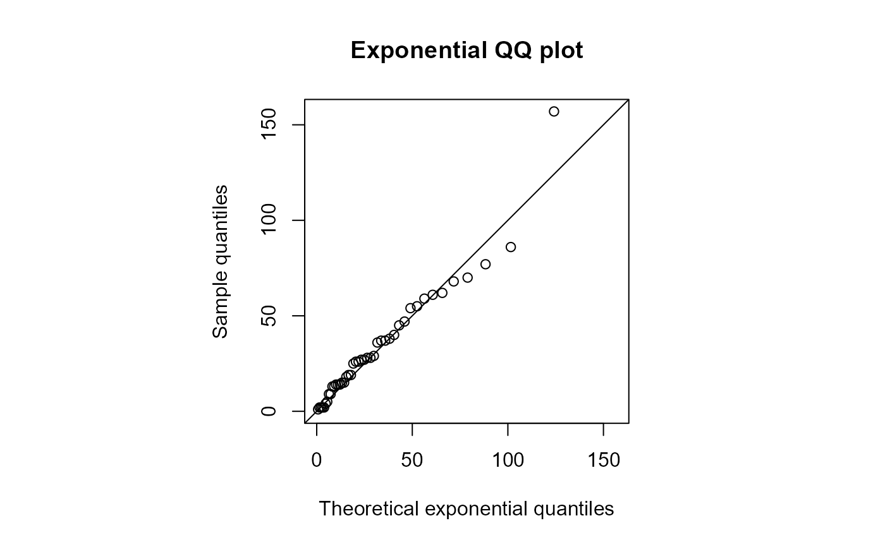
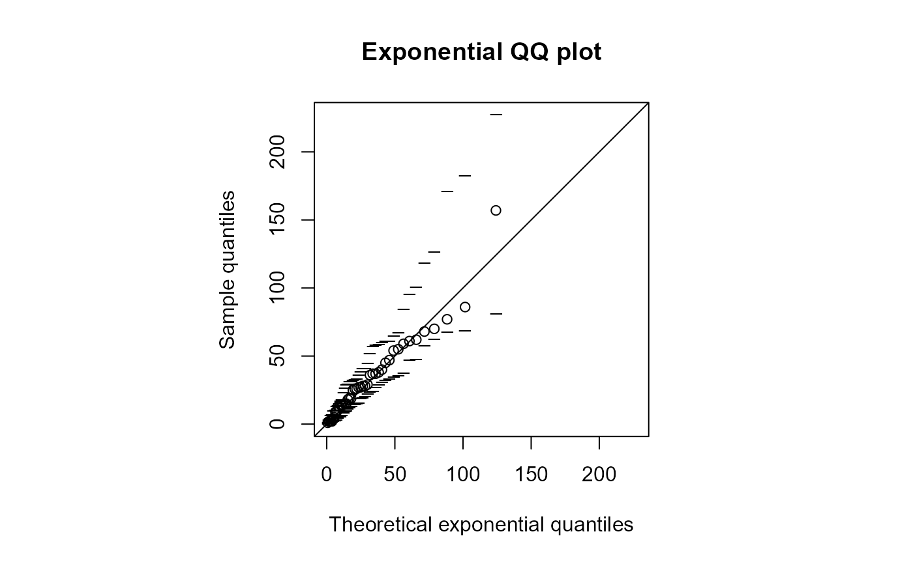
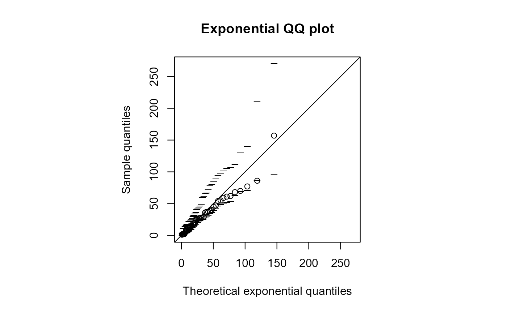

Produces a QQ plot to compare ordered sample data to corresponding quantiles of an exponential distribution fitted to these data.
Sample data
A character scalar. Selects the summary statistic used to estimate \(\lambda\), either the sample mean or sample median.
An integer scalar. If statistic = "median" then
this is passed to quantile to select the type of
sample quantile used to estimate the sample median. The default,
type = 6, selects the estimator defined in the STAT002 notes.
Determines whether or not simulation envelopes should be
added to the plot. If envelopes = FALSE then no envelopes are
added. If envelopes is a positive integer (a common choice is 19)
then simulation envelopes based on this many simulated datasets are added.
The limits of of the envelopes are indicated using short horizontal lines.
Optional arguments to be passed to
plot such as xlab,
ylab, main and/or
graphical parameters such as pch,
lty and lwd, to control the appearance of the main plot.
To change the appearance of the line of equality use the argument
line.
Determines whether or not a line of equality is superimposed on
the plot. If a line is required then must be a list, which can contain
graphical parameters
passed to abline, such as col, lty
and lwd to control the appearance of the line. If line is
not a list, for example, line = 0, then no line is superimposed.
The estimate of \(\lambda\).
The rate parameter \(\lambda\) of the exponential distribution
is estimated using 1/mean(y, na.rm = TRUE) if
statistic = "mean" and
log(2)/quantile(y, probs = 0.5, na.rm = TRUE) if
statistic = "median". The ordered sample data are plotted against
quantiles of this fitted exponential distribution. Specifically, the
\(i\)th smallest sample observation is plotted against the
\(100 i / (n + 1)\%\) theoretical exponential quantile, where \(n\) is
the sample size. The plot is constrained to be square. A line of equality
is superimposed on the plot.
qqnorm to produce a normal QQ plot.
## Australian Birth Times Data
# Calculate the waiting times until each birth
waits <- diff(c(0, aussie_births[, "time"]))
# Estimating lambda using the sample mean
qqexp(waits)

#> estimate of lambda
#> 0.03066202
# Change the appearance of the points and line
qqexp(waits, pch = 16, line = list(lty = 2, col = "blue", lwd = 2))
#> estimate of lambda
#> 0.03066202
# Add simulation envelopes
qqexp(waits, envelopes = 19)

#> estimate of lambda
#> 0.03066202
# Estimating lambda using the sample median
qqexp(waits, statistic = "median", envelopes = 19)

#> estimate of lambda
#> 0.0261565